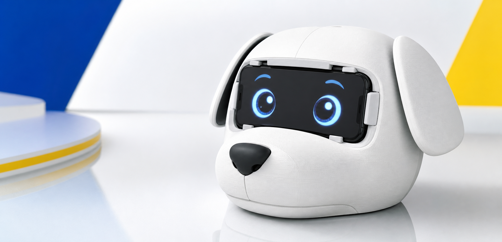

現在の状態
未ログイン
犬の名前: ポチ
Account
犬の名前をアカウントごとに保存します。パスワードはGitHubには置かず、Supabase Authで管理します。
未ログイン
犬の名前: ポチ
Settings
ログイン中は犬の名前をSupabaseに保存します。未ログインの場合は、この端末のブラウザに一時保存します。
Product
3Dプリンタでつくった犬の頭部にスマートフォンをはめ込み、画面に表示した「目」を犬の表情として見せる装置です。 ロボットとして役に立たせるよりも、スマホに犬らしい存在感を与え、ペットとして愛でることを目的にしています。

犬の頭部となる筐体を用意し、目の位置にスマートフォンを固定できる形にします。
スマートフォンを目の部分にはめ込み、画面いっぱいに犬の目を表示します。
呼びかけや動きに反応する目を通して、手元のスマホを犬のような存在として楽しみます。
How It Works
まずスマートフォンでこのアプリを開きます。初めて使う場合は、設定画面から初期設定を行います。
犬の名前などを設定します。設定内容はあとから何度でも更新できます。
画面に目が表示されたスマホを、犬の頭部の目の部分にはめ込んで固定します。
Diagnostics
動作中ページで不具合が出たときに、カメラ、人物検出、マイク、音声認識、鳴き声のどこで止まっているかを確認します。
確認中
未確認
未確認
未確認
未確認
未確認
まだ聞き取っていません
目が追従しないカメラと人物検出を確認してください。
名前に反応しないマイク、音声認識、文字起こし結果を確認してください。
鳴かない鳴き声テストで音が出るか確認してください。
Live
動作を開始すると、画面には目だけを表示します。目の画面をタップすると、この開始画面に戻ります。